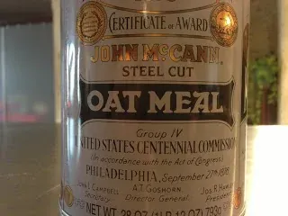
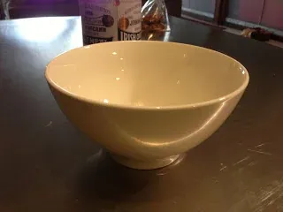

Making Steel Cut Oatmeal in the Microwave
Background
I never knew that I liked oatmeal until I tried the steel cut variety based on a recommendation from famed nerd-chef Alton Brown. For years I had only been exposed to rolled oats--what most people think of when they hear "oatmeal"--and didn't care for its bland, creamy-mushy texture.
When I made steel cut oats for the first time, I realized that the grain could have a nuttier, richer flavor and a texture closer to al dente pasta.


View full-size imageThere are lots of discussions about the health merits of steel cut vs rolled oats vs instant, and various types in between. Most everyone agrees that instant oatmeal is not worth eating, if you have any interest in the health benefits of oatmeal.
Yes, I'm glad for the health benefits, but primarily I like the mouth feel and flavor of steel cut oatmeal above all other varieties.
The problem with steel cut oatmeal is that it takes a long time to prepare (around 30 minutes). And while you're preparing it, you need to stir constantly to prevent boiling over, which is exceedingly boring.
This is where the microwave comes in.
Through exhaustive trial and error, I have a developed a non-patented technique for making the tasty, heart-healthy grain in the microwave in around 17 minutes and without requiring constant supervision.
You can skip down "The Recipe" if you don't want to read about underlying principles of my process.
Underlying Principles: Large Bowl + Microwave Cook Cycle Stacking
Most people who learn that I make oatmeal in the microwave ask me how I avoid boil-over, which is the main hurdle one must overcome when making oatmeal in the microwave. They have tried making microwave oatmeal only to end up with a sloppy mess.
There are two variables that must be taken into account when making oatmeal in the microwave: bowl wall height and heat.
Large Bowl:
The bowl issue is easy to address. Get a tall bowl and only fill it to about 1/3 capacity to allow for expansion. I found that bowls from asian-food restaurant suppliers, which are tall and primarily used for soups and noodles, to be ideal.
These bowls on Amazon are very close to what I got.


View full-size imageMicrowave Cook Cycle Stacking:
The most common microwave usage is the standard, put something in, set a time, and when time's up, you take the now hot thing out of the microwave.
When you cook that way in a microwave, you're using the full power of the microwave for the specified amount of time, and for most things that's fine. In this mode, a 1200W microwave set to run for 1 minute delivers 1200 watts of heat for 60 seconds. Pretty straightforward.
Some people know that you can also vary the microwave's power, so that it delivers less heat over the specified amount of time. The way that microwaves do this is my turning the microwave generator on and off so that it averages whatever power setting you requested. What they don't do is lower their power output. You can think of microwaves as light bulbs in this respect. Just as light bulbs come in set wattages (60w, 75w, 100w), microwave ovens are the same. The listed power is the amount of energy that the magnetron (the thing that generates the microwaves and heats your food) generates when turned on. As with a lightbulb, it's an all or nothing proposition. (For simplicity, I'm ignoring 3 setting lightbulbs :-))
For example, if you set the power on your microwave to 50%, it will turn on the magnetron for 50% of the time during the cooking cycle. The only real difference between manufacturers is how they split the time for different power settings during a cooking cycle (ex: using 5-second or 10-second increments, or some other scheme).
However, what most people don't know is that almost all microwave ovens you can stack at least two cooking cycles on top of each other. You're essentially telling the microwave, "Cook at full power for 30 seconds, and then at 80% power for 2 minutes".
This is useful because it allows you to be more nuanced with your cooking and that is exactly what we need for cooking oatmeal in a microwave.
I boiled over lots of oatmeal before I figured out the best settings for my microwave. With the bowl I chose, my microwave and aiming to get the fastest cook time possible, I stack 2 cycles:
- 2 minutes, 30 seconds at 100% power.
- 15 minutes at 40% power.
As you can (kind of) see in this video, at 40% power, the microwave cuts off long enough during cooking to keep the oatmeal from boiling over. You see the oatmeal heat up, reach the rim of the bowl and then retreat when the magnetron is temporarily turned off.
How do you stack cook cycles? Well, that depends on each microwave. On my microwave oven (a Thermador 1100W model MBB) I type the following into the keypad:
- 2-3-0
- Two minutes, thirty seconds at full power (the default when all you do is put in a time).
- "Cook Time" button
- This button indicates that you're adding a second cook cycle.
- 1-5-0-0
- Fifteen minutes for this second cook cycle.
- "Power" button
- Indicates you're setting the power for the second cook cycle.
- 4
- On my microwave you can only indicate power in 10% increments. So, "4" means "40%" power.
Some readers might be asking why I don't just cook for 22 minutes at 40% power. Well, it's simply because I want to get my oatmeal as quickly as possible.
As always, Wikipedia is a great source if you want to learn more about microwaves.
The Recipe
- A deep bowl (tall sides)
- 1/2 cup of steel cut oatmeal. (I'm partial to McCann's Steel Cut Irish Oatmeal)
- Between 3/4 and 1 cup of water.
- Stacked cook cycles:
- 2:30 minutes at full power.
- 15 minutes at 40% power.
Enjoy!
3 comments
Comments are closed. These were left on the previous version of this site. Questions? Get in touch.
Best article I've seen on cooking regular steel cut oats in microwave, and the only one that reflects an understanding of how these ovens work. I've been using my microwave to do quick steel cut oats (with 100% and 50% power cycles), with great results. Your article inspires me to try the regular steel cut oats in the microwave as well. Thanks.
Thanks Mark! I'm glad you enjoyed the post. :-D
Thank you for figuring this out for us!! It sure takes all the trial and error out of wasting oats as they constantly go up and over the side of the bowl making a huge mess!! Your recipe is so simple but genius at the same time!!